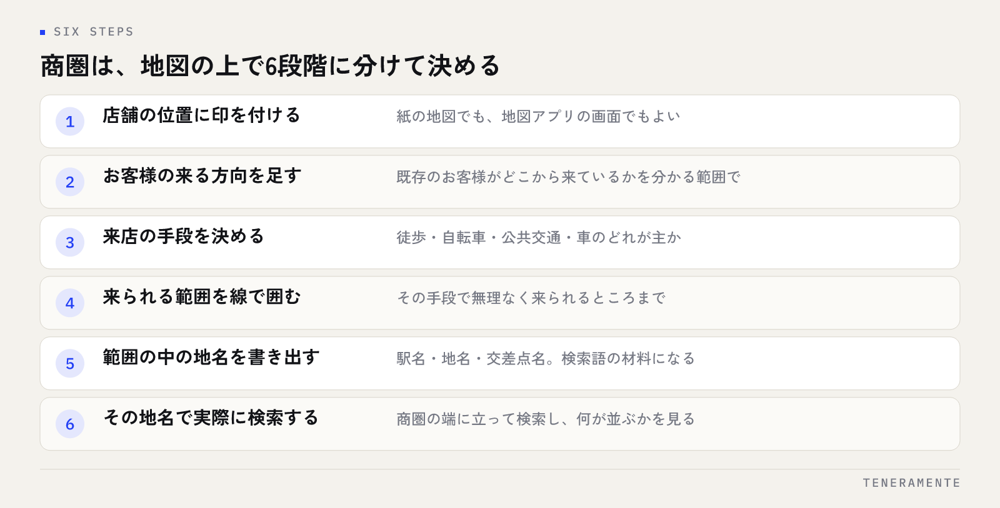

名古屋で店舗を運営していて、Googleマップからの来店を増やしたい。そう思って調べると、やることの一覧は出てくるのに、自分の店の商圏で何から手を付けるべきかは書かれていません。名古屋の店舗のMEO対策で先に決めるのは、作業の順番ではなく、どの範囲の人に見つけてほしいかという商圏の線引きです。この記事では、商圏と競合の調べ方を手順にして、依頼先を選ぶときの確かめ方までをまとめます。
📌 この記事の結論
名古屋の店舗のMEO対策は、商圏を地図の上で決め、その範囲で実際に上に出ている店を見てから作業に入ってください。立地のタイプによって効く打ち手が変わるため、一覧どおりに全部やるより商圏の決め方を先に固めるほうが早く動けます。依頼先は地域の実績の数ではなく、商圏の決め方を言葉で説明できるかで選びます。
01名古屋の店舗のMEO対策は、商圏の線引きから始まる
Googleマップの検索結果は、検索した人がいる場所によって変わります。同じ語で調べても、名駅にいる人と天白区にいる人には違う店が並びます。つまり「名古屋で1位を取る」という言い方には、実はあまり中身がありません。どの地点から検索した人に、どの順番で出たいのかを決めない限り、順位の話は始まりません。
そこで最初にやるのが商圏の線引きです。商圏とは、来店が現実的に起こる範囲のことです。徒歩や自転車で来る店なのか、地下鉄で一駅二駅の範囲なのか、車で幹線道路を使って来る店なのか。この前提が変わると、整えるべきプロフィールの項目まで変わります。
名古屋は市内でも性質の差が大きい街です。地下鉄で移動する中心部と、車で動く郊外が同じ市内に並んでいます。全国向けに書かれた一般的な手順をそのまま当てはめると、自店の来店理由と噛み合わない作業に時間を使うことになります。
商圏を決めたあとは、その範囲の中でどう見つけられるかを考えます。地図検索と通常の検索で見られている情報は重なりながらも違うので、両方の関係はローカルSEOとMEOの違いに整理しています。
02商圏を地図の上で決める手順
頭の中の感覚ではなく、地図を開いて線を引いてください。紙に印刷した地図でも、Googleマップの画面でもかまいません。

- 店舗の位置に印を付ける
- 既存のお客様がどこから来ているかを思い出し、分かる範囲で印を足す
- 来店の主な手段を決める（徒歩・自転車・公共交通・車）
- その手段で無理なく来られる範囲を線で囲む
- 囲んだ範囲の中にある駅名・地名・交差点名を書き出す
- その地名を使った検索語を作り、実際に検索して結果を見る
5番で書き出した地名が、あとで使う検索語の材料になります。「名古屋」だけで考えていると広すぎて手が付きませんが、「池下」「今池」「八事」のように範囲の中の地名まで下ろすと、確かめる対象がはっきりします。
6番を飛ばさないでください。自分の商圏で実際に何が並んでいるかを見ないまま作業を始めると、整えた項目が来店につながるかどうかを後から確かめられません。
03競合の調べ方：同じ検索語で上に出ている店を見る
競合の調べ方といっても、特別なツールは要りません。自分が作った検索語で検索し、上に並んでいる店のプロフィールを一つずつ開いて見ます。
見るのは次の点です。どのカテゴリを主カテゴリにしているか。写真が何を写しているか（外観・内観・商品・スタッフ）。口コミにどんな言葉が繰り返し出てくるか。返信が付いているか。投稿が使われているか。営業時間や属性の記載がどこまで埋まっているか。
このとき、件数の多さを気にしすぎないでください。口コミの数や写真の枚数は一要素でしかなく、同じ数でも中身によって伝わり方が変わります。むしろ注目したいのは、その店が何の店として伝わるように整えているかです。自店と同じカテゴリの店が上に並んでいるなら、カテゴリの選び方は合っています。違うカテゴリの店ばかり並ぶなら、検索した人が期待しているものと自店の見せ方がずれている可能性があります。
もう一つ、現地で検索してみることをおすすめします。商圏の端のあたりに立って同じ語で検索すると、自店が範囲の外から見つけられているのかどうかが分かります。店の中から検索すると自店が上に出るため、判断を誤りやすいところです。
04立地のタイプで、先に整える項目が変わる
名古屋市内でも、中心部の商業地、駅前、住宅地、幹線道路沿いでは、検索される場面が違います。場面が違えば、プロフィールのどこを先に埋めるかも変わります。
| 立地のタイプ | 検索される場面 | 先に整える項目 |
|---|---|---|
| 中心部の商業地・繁華街 | 現在地の近くで探す。いま入れる店を選ぶ | 営業時間、混雑する時間帯、内観写真、入口の写真 |
| 駅前・駅周辺 | 乗り換えや帰り道のついでに探す | 最寄駅と出口の案内、営業時間、外観写真 |
| 住宅地 | 自宅の近くで探す。通い続けられるか見る | 提供サービスの一覧、駐輪・駐車の有無、スタッフ写真 |
| 幹線道路沿い・郊外 | 車で向かう前に探す。停められるかを見る | 駐車場の台数と入り方、経路が分かる写真、属性の記載 |
自店がどのタイプに近いかを決めてから、下の項目に取りかかってください。たとえば幹線道路沿いの店で駐車場の情報が抜けていると、他の項目をどれだけ整えても来店の手前で止まります。逆に繁華街の店では、駐車場より「いま開いているか」の正確さが効きます。
05Googleビジネスプロフィールで先に直す項目
商圏と立地のタイプが決まったら、プロフィールを上から順に確認します。そのまま使えるチェックリストにしました。
- 店名が、実際の看板や登記と同じ表記になっているか（地域名やキーワードを足していないか）
- 主カテゴリが、自店の中心の商品やサービスと一致しているか
- 副カテゴリに、提供している範囲のものだけが入っているか
- 住所の表記が、名刺・ホームページ・各種掲載と同じ形でそろっているか
- 電話番号が、店舗で受けられる番号になっているか
- 営業時間が現状どおりで、祝日や臨時休業の設定も入っているか
- 最寄駅や目印からの行き方が、説明文に入っているか
- 駐車場・駐輪場の有無と、停め方の説明があるか
- 外観写真で、通りから見たときの見え方が分かるか
- 内観写真で、入ったあとの様子が分かるか
- 提供しているサービスや商品が、一覧として登録されているか
- 口コミに返信が付いているか
店名に地域名を足さないでください
検索されたい語を店名に入れたくなりますが、実際の店名と違う表記はGoogleのガイドラインに反します。修正を求められたり、情報が差し戻されたりする原因になります。地域名は店名ではなく、説明文・住所・サービスの登録と、実際の運用の中で伝えていくのが筋の通ったやり方です。
名称・住所・電話番号の表記をそろえる作業は地味ですが、効果の土台になります。考え方はNAP統一の記事にまとめています。
06写真と口コミを、商圏の言葉にそろえる
プロフィールの項目が埋まったら、次は中身を商圏に寄せます。ここが、全国向けの手順と分かれるところです。
写真は、商圏の人が来店を決めるときに確かめたいものを優先します。車で来る商圏なら、道路から見た外観と、駐車場の入り口が写っている写真です。歩いて来る商圏なら、通りからの見え方と、店内の雰囲気です。きれいに撮れた商品写真だけを並べても、たどり着けるかどうかの不安は消えません。
口コミは、集めることより受け止め方を先に決めます。返信の文面に、お客様が書いた来店の理由をそのまま使ってください。「駅から近かった」「駐車場が広かった」「仕事の帰りに寄れた」といった言葉は、その商圏で選ばれている理由そのものです。返信にその言葉を自然に含めていくと、プロフィール全体が商圏の言葉で埋まっていきます。
投稿も同じ考え方です。季節の案内を出すときに、商圏の中の地名や目印に触れておくと、近い場所にいる人に届きやすい内容になります。無理にキーワードを詰めるのではなく、来店する人が実際に使う言葉を選ぶことが大切です。
07よくある失敗と、その避け方
同じつまずき方が繰り返されやすいところです。先に知っておくと避けられます。
- 商圏を決めずに作業を始める：地図を開いて線を引くところからやります。この一手間で、あとの判断がすべて楽になります
- 店の中から検索して順位を判断する：商圏の端で検索して確かめます。店内では自店が上に出るため、見つけられている実感が実態とずれます
- 店名に地域名やサービス名を足す：ガイドライン違反になります。地域名は説明文と運用で伝えます
- 写真を商品だけで埋める：たどり着けるかが分かる写真を先に入れます。外観と入口、駐車場は優先度が高い項目です
- 口コミを集めることだけに力を入れる：返信の型を決めるほうが先です。返信のない口コミは、読んだ人に伝わる情報が半分になります
- 営業時間の変更を反映し忘れる：祝日と臨時休業は、決まった時点で入れる担当を1人決めておきます
- 全部を一度に始めて続かなくなる：立地のタイプから優先順位を決め、月に数回続けられる量に絞ります
MEOでつまずく原因は、やり方を知らないことより、どこに向けてやるかを決めていないことのほうが多くあります。
08自分で進める場合と、専門家に任せる場合の分かれ目
分かれ目になるのは、金額よりも「決まった作業を続けられる人が店内にいるか」と「確かめる手順を自分で回せるか」です。
自分で進めやすいのは、店舗が1店で、情報を更新する担当が決まっていて、商圏の確認を自分で歩いてできる場合です。商圏の線引きも、競合のプロフィールを見る作業も、特別な道具は要りません。まず自分でやってみると、何が効いて何が効かなかったかの感覚が残り、後で誰かに頼むときの判断も速くなります。
任せたほうが早いのは、店舗が増えて商圏が重なり、どの店にどの検索語を担当させるかの整理が必要になった場合、口コミの件数が増えて返信が追いつかない場合、繁忙期に入ると更新がまるごと止まってしまう場合です。また、写真の撮り直しや説明文の書き直しをまとめて進めたいときは、手が増えるだけで前に進みます。
任せる相手を選ぶときは、地域の実績の数を聞くより、商圏の決め方をどう説明するかを聞いてください。初回の相談で、来店の手段や既存のお客様の来る方向を質問してくるかどうかで、進め方の差が出ます。毎月の作業の内容と回数が書面にあるか、プロフィールの権限を店側が持ったままにできるか、作業の記録を店側も見られるかも、先に確かめておく項目です。費用の考え方はMEO対策の費用相場と料金の内訳に、依頼前の確認項目はMEO運用代行の選び方にまとめています。
09よくある質問
名古屋のような都市部は、競合が多くて上位表示は難しいのでしょうか？
市内に2店舗ある場合、プロフィールは1つにまとめたほうがよいですか？
地元の業者に頼んだほうが、地域に強いのでしょうか？
どのくらいで変化が分かりますか？
ホームページがなくても、MEOだけで集客できますか？
10まとめ：商圏を決めてから、作業に入る
名古屋の店舗のMEO対策は、作業の一覧をこなすことではありません。地図の上で商圏を決め、その範囲の端で実際に検索し、上に出ている店のプロフィールを見る。この三つを先にやるだけで、プロフィールのどこを直すべきかが自然に決まります。
立地のタイプによって、先に整える項目は変わります。幹線道路沿いなら駐車場の情報、繁華街なら営業時間と入口の分かりやすさ。全部を一度に始めず、自店のタイプで優先順位を付けて、月に数回続けられる量に絞ってください。
TENERAMENTEなら、最初のご相談で来店の手段と既存のお客様の来る方向をお聞きして商圏を一緒に決め、そのうえでカテゴリ・説明文・写真・口コミ返信のどこから手を入れるかを順番にしてお渡しします。毎月の作業の内容と回数をあらかじめお示しし、プロフィールの権限はお客様に持っていただいたまま運用しますので、何をどこまでやったかが分からないまま費用を払い続ける状態がなくなります。MEO対策の進め方をご覧いただいたうえで、お問い合わせからお気軽にご相談ください。